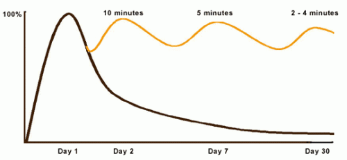

Curve of Forgetting
about memory
The Curve of Forgetting describes how we retain or get rid of information that we take in. It's based on a one-hour lecture.
On day 1
At the beginning of the lecture, you go in knowing nothing, or %, (where the curve starts at the baseline). At the end of the lecture you know % of what you know, however well you know it (where the curve rises to its highest point).
By day 2
If you have done nothing with the information you learned in that lecture, didn't think about it again, read it again, etc. you will have lost 50%-80% of what you learned. Our brains are constantly recording information on a temporary basis: scraps of conversation heard on the sidewalk, what the person in front of you is wearing. Because the information isn't necessary, and it doesn't come up again, our brains dump it all off, along with what was learned in the lecture that you actually do want to hold on to!
By day 7
We remember even less, and by day 30, we retain about 2%-3% of the original hour! This nicely coincides with midterm exams, and may account for feeling as if you've never seen this before in your life when you're studying for exams - you may need to actually re-learn it from scratch.
We remember even less, and by day 30, we retain about 2%-3% of the original hour! This nicely coincides with midterm exams, and may account for feeling as if you've never seen this before in your life when you're studying for exams - you may need to actually re-learn it from scratch.
We remember even less, and by day 30, we retain about 2%-3% of the original hour! This nicely coincides with midterm exams, and may account for feeling as if you've never seen this before in your life when you're studying for exams - you may need to actually re-learn it from scratch.
The shape
You can change the shape of the curve! Reprocessing the same chunk of information sends a big signal to your brain to hold onto that data. When the same thing is repeated, your brain says, "Oh - there it is again, I better keep that." When you are exposed to the same information repeatedly, it takes less and less time to "activate" the information in your long term memory and it becomes easier for you to retrieve the information when you need it.
Here's the formula and the case for making time to review material: within 24 hours of getting the information - spend 10 minutes reviewing and you will raise the curve almost to 100% again. A week later (day 7), it only takes 5 minutes to "reactivate" the same material, and again raise the curve. By day 30, your brain will only need 2-4 minutes to give you the feedback, "yes, I know that..."
Often students feel they can't possibly make time for a review session every day in their schedules - they have trouble keeping up as it is. However, this review is an excellent investment of time. If you don't review, you will need to spend 40-50 minutes re-learning each hour of material later - do you have that kind of time? Cramming rarely stores information in your long term memory successfully, which makes it harder to access the material for assignments during the term and exam preparation.
Depending on the course load, the general recommendation is to spend half an hour or so every weekday, and 1.5 to 2 hours every weekend in review activity. Perhaps you only have time to review 4 or 5 days of the week, and the curve stays at about the mid range. That's ok, it's a lot better than the 2%-3% you would have retained if you hadn't reviewed at all.
Many students are amazed at the difference reviewing regularly makes in how much they understand and how well they understand and retain material. It's worth experimenting for a couple weeks, just to see what difference it makes to you!